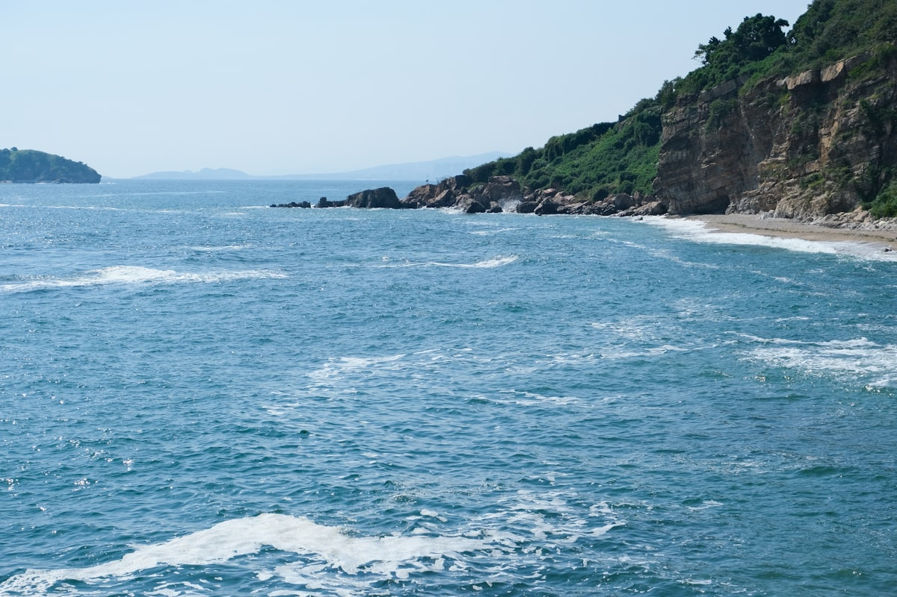
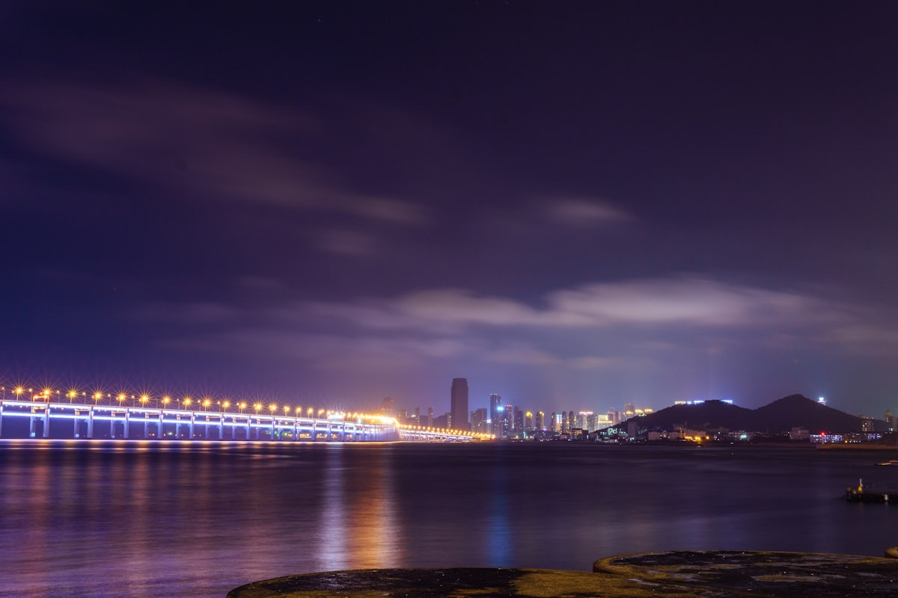
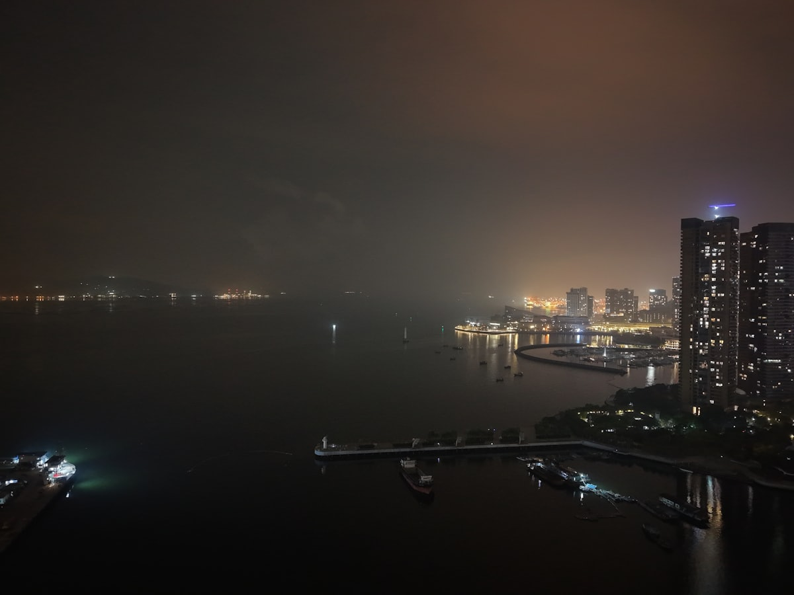
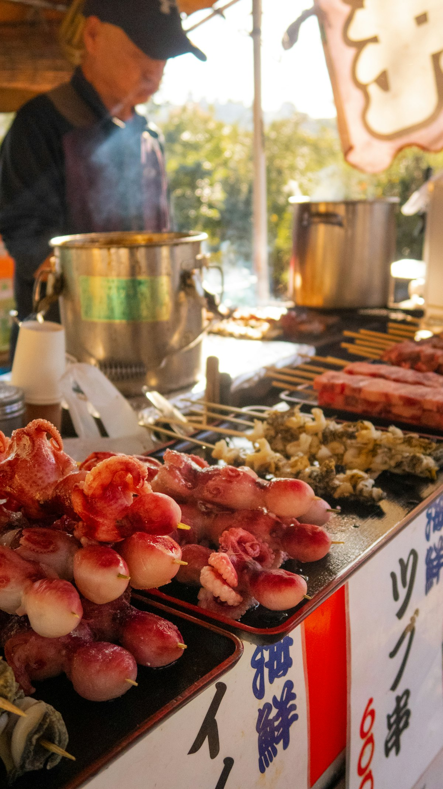

| 事项 | 结论 |
|---|---|
| 假期 | 周末 + 周五请半天（可选） |
| 推荐方案 | 3 天 2 晚（周五晚 – 周日晚） |
| 回京约束 | 周日晚间到京，周一正常上班 |
| 行程链 | 北京 → 大连北 → 星海 → 老虎滩/棒棰岛 → 金石滩 → 北京 |
| 预算（人均） | 经济 1200–1600 元 ／ 标准 1800–2400 元 ／ 舒适 2800–3800 元 |
| 三件提前事 | ① 高铁/机票提前 1–2 周订 ② 住宿提前 2 周订（旺季周末易满）③ 老虎滩/圣亚门票提前网购便宜 |
| 季节提醒 | 夏季海滨旺季，7–8 月下水正当时；早晚温差大，带薄外套 |
请假：推荐周五请半天（可选）；若完全不想请假，用周五晚班车即可。
| 日期 | 行程 | 过夜地 | 主题 |
|---|---|---|---|
| D1 周五晚 | 北京 → 大连（高铁约 4h 或晚班动车），抵达后入住中山广场/星海周边 | 大连市区 | 交通 + 入住 |
| D2 周六 | 上午星海广场 + 星海公园（喂海鸥、跨海大桥），下午老虎滩海洋公园 或 圣亚海洋世界（二选一），傍晚滨海路看日落，晚上东港威尼斯水城夜景 | 大连市区 | 滨海精华 |
| D3 周日 | 上午金石滩黄金海岸 + 地质公园（轻轨 1 小时），或改选棒棰岛 + 渔人码头，下午返程回京 | — | 沙滩收尾 |
以下为 3 天全程的逐小时执行时间线，可当作「当天打开照着走」的清单。标注 ※ 的可选项视体力与天气取舍。
| 时间 | 事项 |
|---|---|
| 13:30 | 请半天假的方案：出发去北京朝阳站（高铁）或北京南站（部分车次） |
| 14:30–19:00 | 乘高铁赴大连（北京朝阳 → 大连北，约 3.5–5h，二等座 400–450 元） |
| 19:00 | 抵达大连北站，打车/地铁至市区酒店（北站距市区约 40 分钟车程） |
| 20:30 | 入住（推荐中山广场/青泥洼桥，靠近火车站与地铁枢纽） |
| 21:00 | 晚餐：市区海鲜大排档或简餐；早睡，第二天要早起看海 |
| 时间 | 事项 |
|---|---|
| 07:30 | 起床早餐（酒店含早就酒店吃） |
| 08:30–11:00 | 星海广场（免费，亚洲最大城市广场）：百年城雕、喂海鸥、远眺星海湾跨海大桥 |
| 11:00–11:30 | 步行/打车至星海公园，看海散步 |
| 11:30–12:30 | 午餐（星海周边海鲜或快餐） |
| 13:00–17:00 | ※ 老虎滩海洋公园（旺季五馆 220 元，约 4h）或 圣亚海洋世界（四馆约 180 元）二选一，极地馆看白鲸海豚表演 |
| 17:00–18:30 | ※ 滨海路木栈道看日落（燕窝岭、北大桥段），沿途海景无敌 |
| 19:00–20:30 | 东港商务区 + 威尼斯水城（免费）：欧式建筑灯光夜景，可坐贡多拉游船（约 60 元） |
| 20:30 | 晚餐：海鲜正餐（人均 80–150 元）或回酒店附近夜市 |
| 时间 | 事项 |
|---|---|
| 07:30 | 早餐，退房寄存行李 |
| 08:30 | 出发前往金石滩（轻轨 3 号线直达，火车站出发约 1h） |
| 09:30–12:30 | 金石滩黄金海岸（沙滩免费）+ 金石滩地质公园（旺季 60 元），看海蚀地貌、赶海拍照 |
| 12:30–13:30 | 金石滩午餐（海鲜排档） |
| 14:00 | 返回市区取行李（或从金石滩直接打车去大连北站） |
| 15:00–20:00 | 乘高铁返京（下午车次，约 4h 到北京，周日晚上到） |
| 20:30 | 到家休息，第二天正常上班 |
必去（必去）/ 顺路（顺路）/ 可跳过（可跳过）。

必去
必去
顺路部分图片为 Unsplash 主题图（星海湾大桥、东港夜景、滨海海岸等均为大连实景图），用于页面配图。更多景点：棒棰岛（20 元）、渔人码头（免费）、俄罗斯风情街（免费）、中山广场老建筑（免费）。
点击左侧节点可在地图上定位；点击地图 marker 会高亮对应节点。坐标为 WGS-84 转 GCJ-02 纠偏后标注。
以下为单人、不含购物的估算；门票为旺季参考价，以现场为准。交通按高铁往返计（约 800–900 元），若改飞机预算上浮 600–1000 元。
| 项目 | 经济（1200–1600） | 标准（1800–2400） | 舒适（2800–3800） |
|---|---|---|---|
| 往返交通 | 动车二等座约 550 | 高铁二等座约 850 | 高铁一等座/机票约 1600 |
| 住宿（2 晚） | 青旅/快捷 150–250 | 连锁酒店 400–600 | 星海海景酒店 900–1500 |
| 门票 | 圣亚 180 | 老虎滩 220 + 金石滩 60 | 老虎滩 220 + 金石滩套票 + 贡多拉 |
| 餐饮（3 天） | 120–180 | 250–350（含 2 顿海鲜） | 400–600（海鲜正餐） |
| 市内交通 | 地铁 3 日票 40 | 地铁 + 打车 80–120 | 打车为主 150–250 |
北京 → 大连飞行约 1.5 小时，单程 400–1000 元（早/晚班便宜）。适合不想在高铁上耗 4 小时的安排，但机场（周水子）到市区也要 20–30 分钟车程，总时长差距没有想象中大。
旅顺口区距市区约 1 小时车程，看「旅顺军港 + 白玉山」，适合对近代史感兴趣的人。地铁 + 巴士往返约 30 元，包车约 300 元/天。时间紧张时不推荐，留给下次。
| 方式 | 时长 | 参考价 | 备注 |
|---|---|---|---|
| 高铁（推荐） | 3.5–5h | 二等座 400–450 元 | 北京朝阳 → 大连北，班次多；G977 等快车约 3h40m |
| 动车 | 6h 左右 | 二等座约 269 元 | 便宜，但时间较长 |
| 飞机 | 约 1.5h | 400–1000 元 | 早/晚班便宜，注意行李额度 |
| 夜班直达车 | 11–14h | 硬卧约 222–263 元 | K/Z 字头，睡一觉到，省一晚住宿但累 |
| 区域 | 价格/晚 | 优点 | 短板 |
|---|---|---|---|
| 中山广场/青泥洼桥 | 快捷 200–300 | 近火车站、地铁枢纽，逛老建筑方便 | 离海边较远，需乘车约 20 分钟 |
| 星海广场 | 民宿 300–450 / 海景酒店 600–1000 | 近海，步行可达浴场，晚景漂亮 | 旺季房价高、周末易满房 |
| 东港商务区 | 中高端 400–800 | 海景 + 现代夜景，威尼斯水城就在旁边 | 餐饮偏贵 |